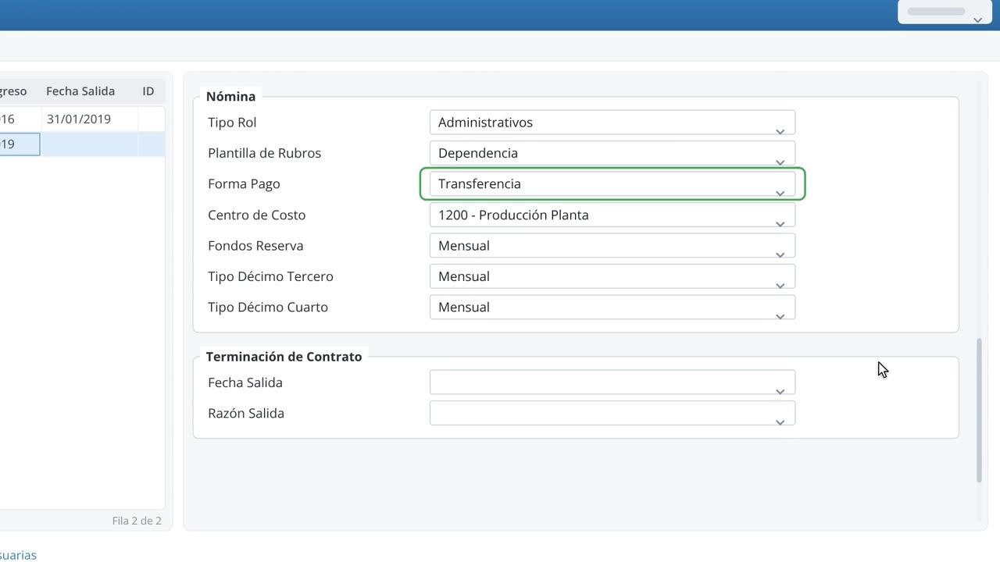

Ficha completa
Foto, residencia, seguro social, datos médicos, cuentas bancarias, familiares, idiomas y referencias.
La ficha completa de cada colaborador, sus contratos y su historial en un solo lugar. Todo lo que registras aquí alimenta la asistencia y la nómina.

Pantallas reales del módulo Recursos Humanos de SquareNet.Clic en el video para verlo en pantalla completa.
Foto, residencia, seguro social, datos médicos, cuentas bancarias, familiares, idiomas y referencias.
Cada cambio de contrato genera una acción de personal con los valores de antes y después: el historial completo.
Contratos, certificados y cartas desde tus propias plantillas, y carnets con diseño configurable.
Saldos de vacaciones por periodo y motivos de ausentismo ilimitados, compartidos con Asistencia.
Archivos batch de entradas, salidas y cambios de sueldo listos para subir al portal.
Organigrama automático y registro de cursos, con lo devengado y lo pendiente.
16 reportes listos para usar, exportables a Excel o PDF desde el sistema.
Complemento ideal para el ERP de tu empresa: SAP, Microsoft Dynamics AX, JD Edwards, Infor u otro sistema administrativo financiero.
Te mostramos Recursos Humanos en una demo y te asesoramos para la cotización.